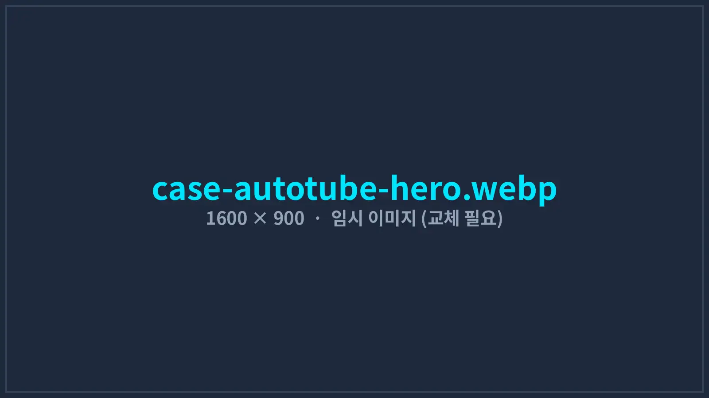
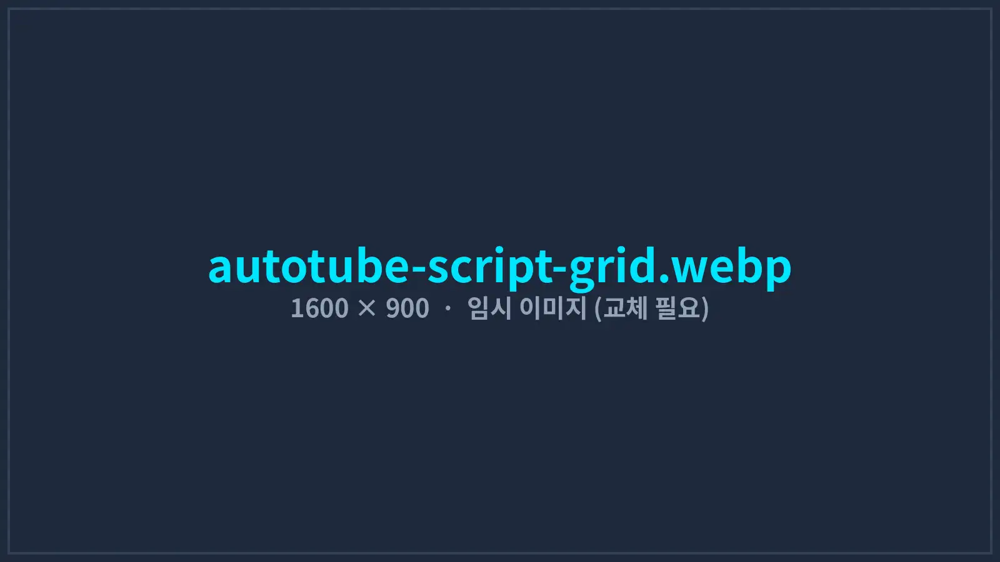
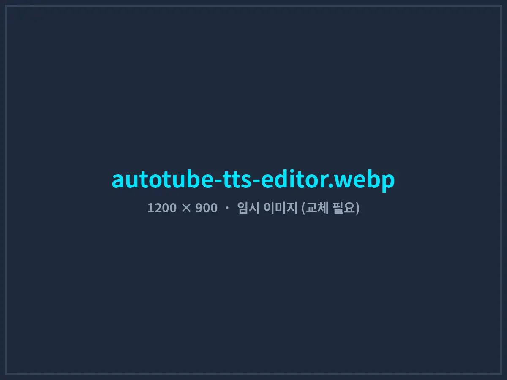
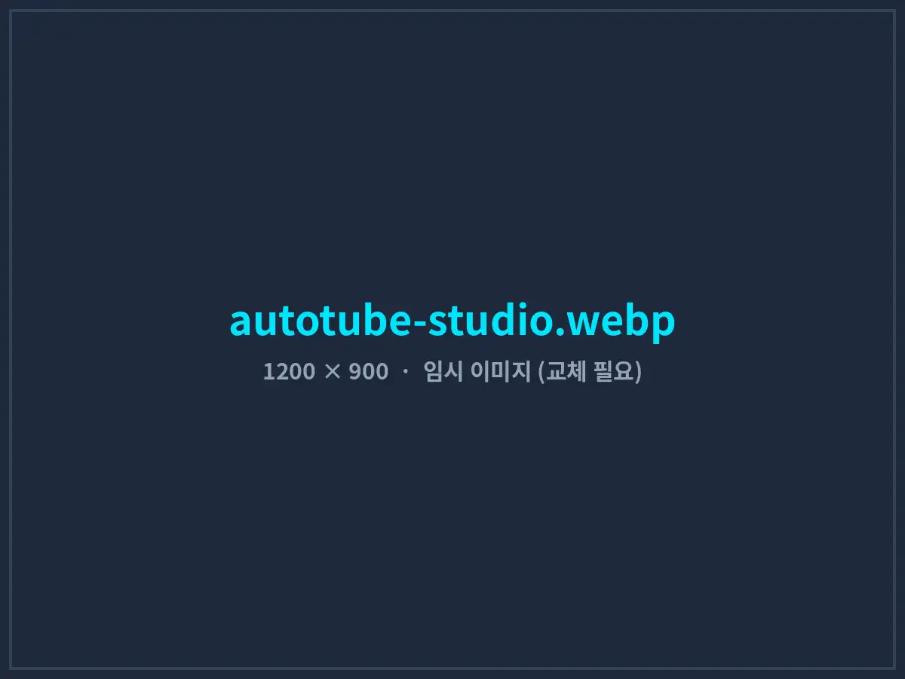

교육 콘텐츠 채널 운영사, 영상 1편 제작 시간을 9시간에서 2시간 40분으로
대본을 넣으면 컷별 이미지, AI 음성, 자막, CapCut 편집 프로젝트가 한 번에 만들어지는 제작 파이프라인. 오토튜브(AutoTube)를 고객사 채널 포맷에 맞게 커스터마이징해 제작 인력을 늘리지 않고 발행량을 2.4배로 늘렸습니다.
- 고객사
- A사 (교육 콘텐츠 제작사)
- 규모
- 유튜브 채널 4개 · 제작 인력 3명
- 구축 기간
- 2025.06 – 2025.08 (11주)
- 적용 솔루션
- 오토튜브 Pro + 채널 맞춤 파이프라인
- 핵심 기술
- Gemini 이미지 · Qwen3-TTS · Whisper
- 운영 환경
- Windows 11 PC 3대 (RTX 4070)

01도입 배경: 채널은 늘었는데 사람은 그대로
A사는 경제 해설, 생활 영어, 시니어 건강 정보 등 4개 채널을 운영하는 교육 콘텐츠 제작사입니다. 모든 영상은 대본 → 컷별 이미지 → 성우 녹음 → 자막 → 편집 순서로 만들어지는데, 단계마다 다른 도구를 쓰다 보니 파일을 옮기고 이름을 맞추는 일에만 많은 시간이 들었습니다.
10분 분량 영상 1편에 들어가는 이미지는 평균 70장 안팎이었고, 편집자 1명이 한 편을 완성하는 데 약 9시간이 걸렸습니다. 결국 3명이 주 5편을 발행하는 것이 한계였고, 신규 채널을 열 여력이 없었습니다.
- 도구가 5개로 흩어짐이미지 생성, 녹음, 자막, 편집 도구 사이에서 파일을 수동으로 옮기고 컷 번호를 맞춰야 했습니다.
- 외주 녹음 비용과 대기 시간편당 12만 원 안팎의 성우 녹음비가 들고, 대본을 한 줄만 고쳐도 재녹음에 2~3일이 걸렸습니다.
- 자막 싱크 수작업자동 자막은 오탈자가 많아 결국 편당 90분가량 사람이 문장을 다시 맞췄습니다.
- 캐릭터 일관성 문제컷마다 이미지를 따로 만들다 보니 채널 대표 캐릭터의 얼굴과 옷이 영상 안에서도 달라졌습니다.
02솔루션: 대본 한 장에서 편집 프로젝트까지
새 프로그램을 여러 개 도입하는 대신, 이미 판매 중인 영상 제작 자동화 프로그램 오토튜브 Pro를 기반으로 A사의 대본 양식, 채널별 캐릭터, 자막 스타일, 편집 템플릿을 반영한 전용 파이프라인을 구성했습니다. 편집자는 엑셀 대본을 불러온 뒤 단계별 결과를 확인하고 승인만 하면 됩니다.
- STEP 1엑셀 대본 불러오기 (컷 단위)
- STEP 2컷별 AI 이미지 일괄 생성
- STEP 3AI 음성(TTS) 일괄 녹음
- STEP 4Whisper 자막 정렬
- STEP 5CapCut 프로젝트 자동 조립
대본 그리드 편집기
엑셀 대본을 컷 단위 표로 불러와 대사, 이미지 프롬프트, 등장인물, 컷 길이를 한 화면에서 수정합니다. 수정 내용은 다시 엑셀로 내보낼 수 있습니다.
캐릭터 고정 이미지 생성
채널별 캐릭터 시트를 매 요청에 자동 첨부해 Gemini로 컷 이미지를 생성합니다. API 한도에 걸리면 브라우저 자동화 경로로 전환하고, 실패한 컷만 모아 다시 요청합니다.
로컬 GPU AI 음성 녹음
Qwen3-TTS를 사내 PC의 GPU에서 실행해 문장 단위로 일괄 녹음합니다. 끝음 잘림 방지 처리와 무음·음량 정규화를 적용하고, 파형을 보며 한 컷만 다시 녹음할 수 있습니다.
대본 기준 자막 정렬
Whisper로 음성의 시간 정보만 추출하고, 글자는 원본 대본을 그대로 사용해 오탈자 없는 자막을 만듭니다. 한국어 어절 단위 줄바꿈 규칙(한 줄 최대 18자)을 적용했습니다.
CapCut 편집 프로젝트 조립
이미지·음성·자막 트랙을 컷 순서대로 배치하고 채널별 줌·패닝 모션 프리셋을 입힌 CapCut 프로젝트 파일을 생성합니다. 편집자는 CapCut에서 열어 마무리만 합니다.
설치 · 업데이트 · 라이선스
MSI 설치 파일로 PC 3대에 배포하고, 새 버전은 프로그램 실행 시 자동으로 내려받습니다. 채널 추가나 템플릿 변경도 원격 업데이트로 반영합니다.



03구축 과정
- 1–2주차
현행 제작 공정 분석
편집자 3명의 실제 작업을 1주일간 기록해 단계별 소요 시간을 측정했습니다. 이미지 생성(약 3시간)과 자막 수정(약 1.5시간)이 가장 큰 병목으로 확인됐습니다.
- 3–5주차
채널별 템플릿 · 캐릭터 설정
4개 채널의 캐릭터 시트, 화풍 프롬프트, 자막 폰트·위치, 모션 프리셋을 채널 프로필로 저장했습니다. 발음이 어려운 숫자·영문 표기는 TTS 전처리 규칙으로 정리했습니다.
- 6–8주차
경제 해설 채널 파일럿
가장 발행량이 많은 채널 1개에 먼저 적용해 3주간 실제 영상을 제작했습니다. 이 기간에 나온 수정 요청 23건을 반영했습니다.
- 9–11주차
전 채널 확대 · 교육
나머지 3개 채널로 확대하고, 편집자 교육(2회)과 문제 상황별 대응 매뉴얼을 제공했습니다.
04도입 성과
도입 전 4주와 전 채널 적용 후 8주의 제작 기록을 같은 기준(10분 내외 영상, 편집자 3명)으로 비교했습니다.
※ 제작 시간은 대본 확정 이후부터 편집 프로젝트 완성까지의 편집자 작업 시간입니다. 대본 작성과 최종 업로드 검수 시간은 포함하지 않았습니다.
숫자로 드러나지 않는 변화도 있었습니다. 대본을 고쳐도 해당 문장만 다시 녹음하면 되기 때문에 수정 요청을 당일 반영할 수 있게 됐고, 캐릭터가 영상마다 같은 모습으로 나오면서 채널 브랜딩이 안정됐습니다. A사는 늘어난 제작 여력으로 도입 3개월 뒤 5번째 채널을 개설했습니다.
운영 원칙: 모든 단계를 무인화하지 않았습니다. 이미지 선택, 최종 편집, 업로드 전 검수는 사람이 합니다. 자동화는 반복 작업을 없애는 데 쓰고, 콘텐츠 품질 판단은 편집자에게 남겨 두는 것이 장기적으로 채널 신뢰도를 지키는 방법이라고 판단했습니다.
05자주 묻는 질문
우리 채널의 기존 스타일을 그대로 유지할 수 있나요?
네. 캐릭터 시트, 화풍 프롬프트, 자막 폰트와 위치, 컷 전환 모션을 채널 프로필로 저장해 두고 모든 영상에 동일하게 적용합니다. 기존 영상 2~3편을 기준으로 초기 설정을 맞춰 드립니다.
AI 음성은 어떤 목소리를 쓰나요? 상업적으로 사용해도 되나요?
상업적 이용이 허용된 오픈소스 TTS 모델을 고객사 PC에서 직접 실행합니다. 기본 제공 목소리 중에서 선택하거나, 본인 동의를 받은 녹음 샘플로 전용 목소리를 설정할 수 있습니다. 음성 데이터는 외부 서버로 전송되지 않습니다.
필요한 PC 사양은 어느 정도인가요?
Windows 10/11 64비트, NVIDIA 그래픽카드(VRAM 12GB 이상 권장, RTX 3060 12GB 이상), 메모리 32GB, 여유 저장공간 100GB 이상을 권장합니다. 첫 실행 시 AI 모델 파일(약 1.5GB)을 자동으로 내려받습니다.
비용은 어떻게 되나요?
오토튜브 Pro 기본 라이선스는 PC 1대 기준 연 98만 원입니다. 채널 맞춤 설정, 전용 기능 개발, 다중 PC 배포가 필요한 경우에는 범위에 따라 별도 견적을 드리며, 기능 단위로 선택해 도입할 수 있습니다.
유튜브 업로드까지 자동으로 되나요?
기본 구성은 편집 프로젝트 생성까지입니다. 제목·설명·태그 템플릿 생성과 예약 업로드 연동은 옵션으로 제공하지만, 업로드 직전 사람이 최종 검수하는 방식을 권장합니다.
우리 채널도 자동화할 수 있을까요?
현재 제작 과정을 알려주시면 단계별 절감 시간을 먼저 계산해 드립니다.